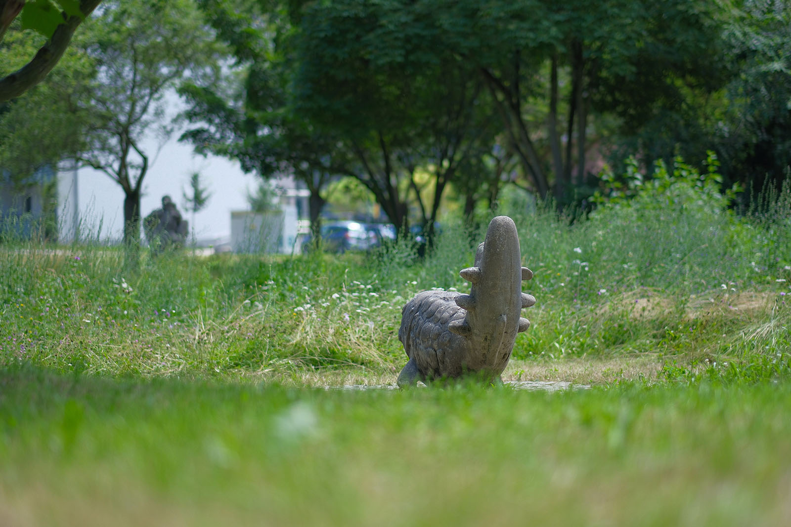
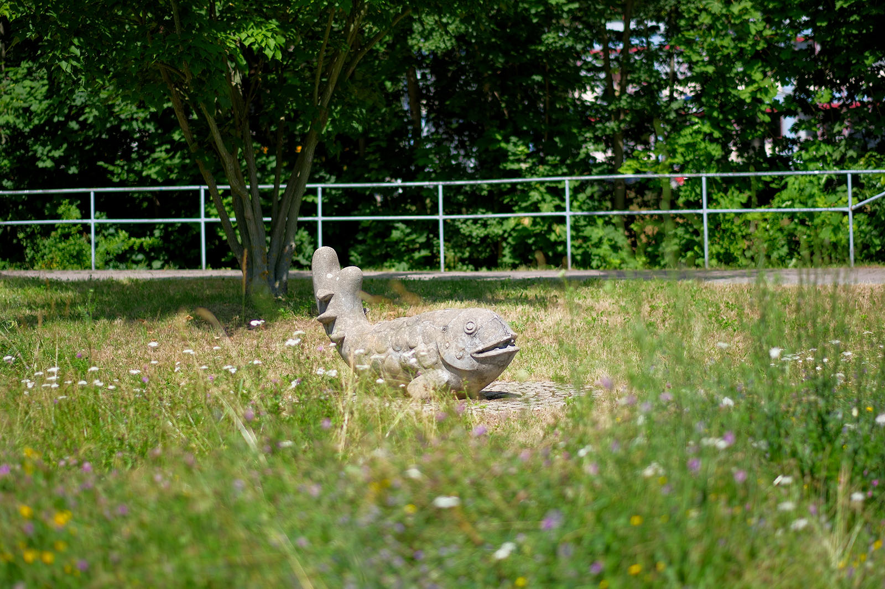
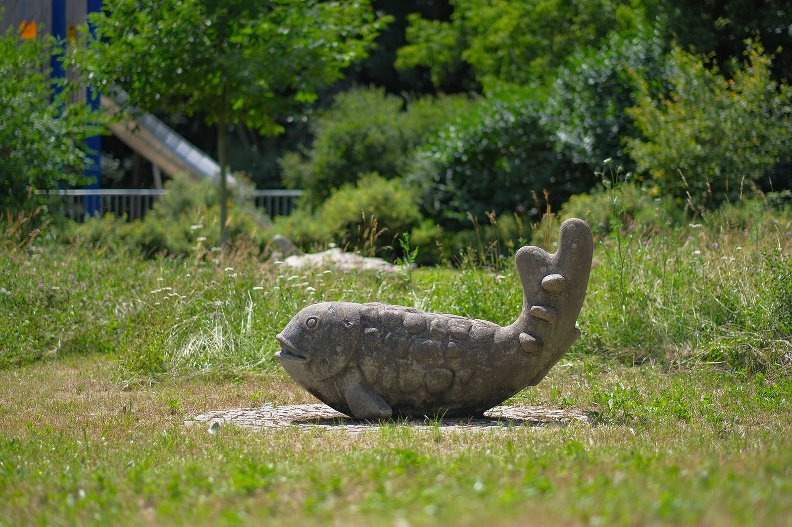
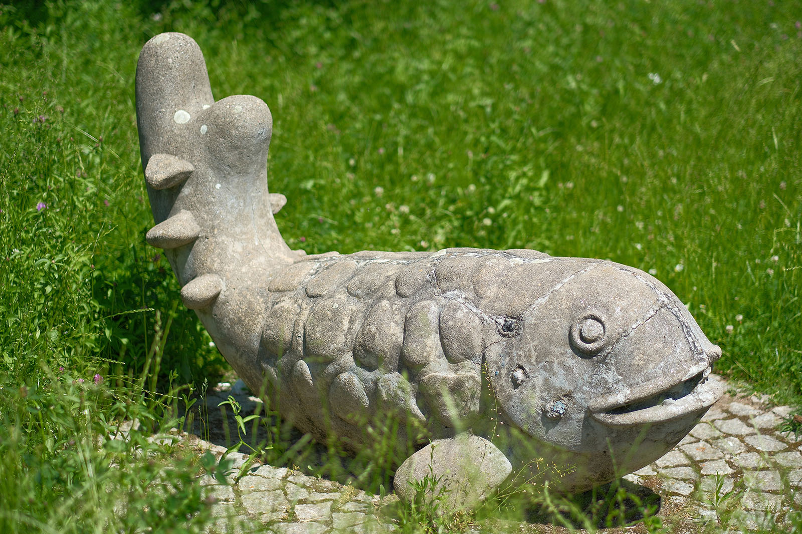

Recherche und Werkbeschreibung: Roman Pilz. Text und Fotografien wechseln sich wie in einem Magazin ab. Ein Klick auf ein Bild öffnet die Großansicht.
Die Betonplastik wurde anlässlich des VIII. Pioniertreffens in Karl-Marx-Stadt 1988 vom Demokratischen Frauenbund Deutschlands im neu eingerichteten Pionierpark nahe der Chemnitz aufgestellt. Der Fisch wurde mit weiteren von Künstlern gestalteten Spielplastiken auf der 1987 revitalisierten Fläche aufgestellt.
Vor dem Krieg stand an dieser Stelle die große Strumpfwarenfabrik von Hermann Stärker, von der nach ihrer weitgehenden Zerstörung 1945 noch lange Gebäudeteile an dem Ort überdauerten. Ende der 1980er Jahre wurde das Areal zwischen Kappelbach und Chemnitz neu gestaltet. Neben dem Park wurden ein Pionierpavillon, heute betrieben als Haus "Lichtblick", in dem Projekte der städtischen Jugendhilfe in freier Trägerschaft organisiert werden, sowie ein Spielplatz realisiert.
Rainer Maria Schubert wurde 1944 in Scheibenberg geboren. Schubert studierte von 1961 bis 1964 Holzgestaltung an der Fachhochschule für angewandte Kunst Schneeberg unter Johannes Belz. Direkt nach seinem Abschluss wechselte Schubert als Assistent seines früheren Lehrers Belz nach Karl-Marx-Stadt (Chemnitz).
Seitdem 1964 arbeitete Schubert auch als freiberuflicher Bildhauer, Objektgestalter und Zeichner, bis heute an verschiedenen Ateliers im Stadtteil Sonnenberg. Schubert schuf eine Reihe baugebundener Werke sowie kleinere und größere Arbeiten für öffentliche und private Auftraggeber. Er ist Mitglied im Chemnitzer Künstlerbund.
1995 wurde er mit dem Sächsischen Staatspreis für Design ausgezeichnet. Der Künstler arbeitet mit Holz, Beton, Kunststein, Keramik und Stahl. Eines seiner wichtigsten Werke in Chemnitz, die "Felsszenerie", befindet sich im ehemaligen Wohngebiet "Fritz Heckert" in.
Weitere Arbeiten in Chemnitz sind im Park nahe des Falkeplatzes, im Stadthalenpark sowie am Wilhelm-Külz-Platz aufgestellt.
Die Farm der freundlichen Tiere
Die Betonplastik „Fisch“ (1988) von Rainer Maria Schubert am Falkeplatz
Schubert fertigte die aus Beton gegossene Tierfigur in der Bezirkswerkstatt für Kunst und Restaurierung auf dem Sonnenberg. Er nutzte als Gussmodell wohl eine Vorlage, bei der in der modellierten Masse auch natürliche Wackersteine integriert waren: Beim Abguss bilden die rundgeschliffenen Formen der als Geröll auffindbaren Steine die sanften Schuppenformen des stilisierten Fischs.
Der rund gespaltene Schwanz des Tieres hat eine nach oben gebogene Form, die sich beim Spielen gut als Sitzgelegenheit eignet. Jeweils zwei seitliche, weiter aus der Flosse herausragende Steinformen sind als stufenartige Kletterhilfe konzipiert.
Der runde Kopf des Fisches hat ein breites, lachendes Maul mit einzelnen Zähnen sowie zwei große runde Augen. Zwei kleine Seitenflossen stützen den Körper des Fisches am Boden ab. Alle Partien des Fisches sind ohne Ecken und Kanten gearbeitet und laden zum "Reiten" des Meereswesens ein.

Ein früherer Entwurf des Fisches aus dem Jahr 1983, der damals im Heckert-Gebiet aufgestellt wurde, wies an den Kiemenöffnungen lange, bürstenartige Quasten auf. Beim Abguss sind an dieser Stelle drei Punkte als Gestaltung verblieben. Es existieren weitere Exemplare des Fisches u.a. in Chemnitz sowie am Wolziger See in Brandenburg.
Rainer Maria Schubert wurde 1944 in Scheibenberg geboren. Schubert studierte von 1961 bis 1964 Holzgestaltung an der Fachhochschule für angewandte Kunst Schneeberg unter Johannes Belz. Direkt nach seinem Abschluss wechselte Schubert als Assistent seines früheren Lehrers Belz nach Karl-Marx-Stadt (Chemnitz).
Seitdem 1964 arbeitete Schubert auch als freiberuflicher Bildhauer, Objektgestalter und Zeichner, bis heute an verschiedenen Ateliers im Stadtteil Sonnenberg. Schubert schuf eine Reihe baugebundener Werke sowie kleinere und größere Arbeiten für öffentliche und private Auftraggeber. Er ist Mitglied im Chemnitzer Künstlerbund.

1995 wurde er mit dem Sächsischen Staatspreis für Design ausgezeichnet. Der Künstler arbeitet mit Holz, Beton, Kunststein, Keramik und Stahl. Eines seiner wichtigsten Werke in Chemnitz, die "Felsszenerie", befindet sich im ehemaligen Wohngebiet "Fritz Heckert" in.
Weitere Arbeiten in Chemnitz sind im Park nahe des Falkeplatzes, im Stadthalenpark sowie am Wilhelm-Külz-Platz aufgestellt.

Die Farm der freundlichen Tiere
Die Betonplastik „Fisch“ (1988) von Rainer Maria Schubert am Falkeplatz
